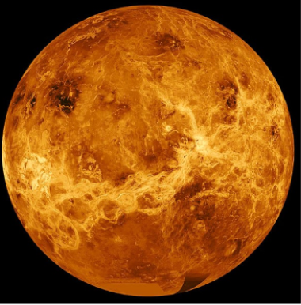

A continuación de Mercurio encontramos a Venús. Es el que más se parece a la Tierra. Está cubierto de nubes muy espesas que reflejan la luz solar, de modo que de noche se ve brillante y podemos distinguirlo a simple vista. Su nombre es en honor a Venus, diosa romana del amor
